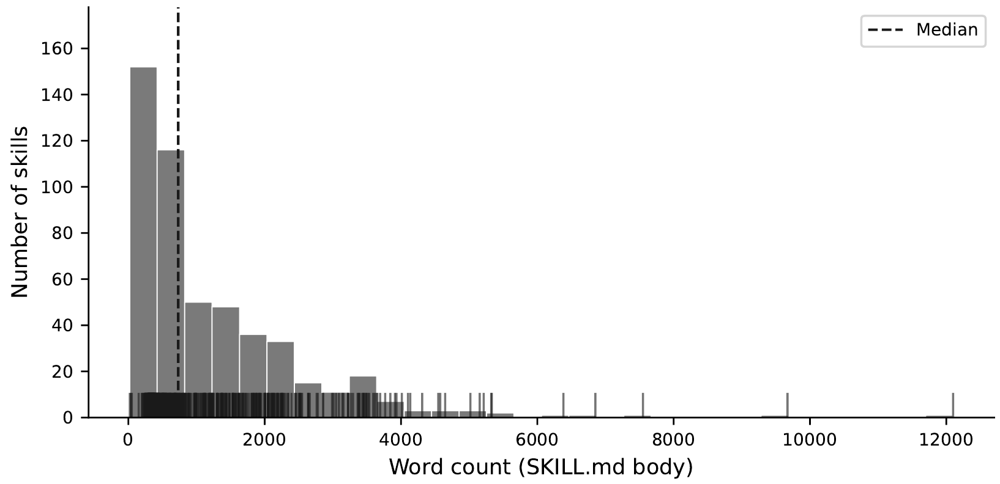
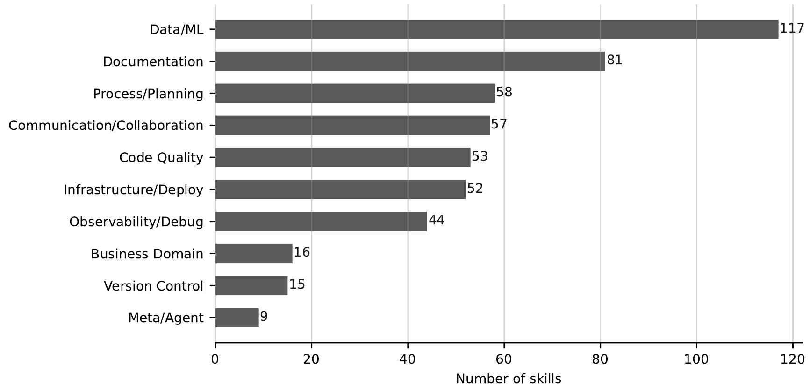

Uma pasta com um SKILL.md, versionada no repositório, que ensina o agente a executar uma tarefa.
.claude/skills/nova-migracao/ ├── SKILL.md # name, description e os passos ├── scripts/ # executados, não lidos ├── references/ # lidos se precisar └── assets/ # templates, exemplos
SKILL.md---
name: nova-migracao
description: Cria uma migração SQL seguindo as convenções do projeto.
Use ao adicionar ou alterar tabela, coluna ou índice.
metadata:
intencao: executiva
interacao: interativa
---
# Nova migração
1. Rode scripts/checar.sh para ver a última migração aplicada.
2. Copie assets/template.sql para db/migrations/AAAAMMDD_<nome>.sql.
3. Siga os nomes de tabela e índice de references/convencoes.md.
4. Mostre o SQL ao usuário e peça confirmação antes de aplicar.
5. Rode npm test. Se falhar, desfaça a migração e explique o erro.
O frontmatter é o que o agente vê sempre. O corpo só entra quando a description casa com o pedido.
name e description, cerca de 100 tokens
O SKILL.md inteiro entra na janela
Referências abertas e scripts executados só se o passo exigir
Toda skill declara quanto o agente pode fazer sozinho.
Orienta ou analisa, sem ação irreversível.
Produz efeito real: escreve arquivo, abre merge request, faz deploy.
Pede entrada do usuário antes ou durante a execução.
Disparada pelo usuário, vai até o fim sem perguntar mais nada.
Dispara sozinha, por agenda ou evento, sem ninguém pedir.
O pior que acontece se a skill rodar até o fim sem humano no laço.
Só leitura e análise.
Arquivo local ou artefato reversível.
Abre MR ou ticket, manda mensagem, altera estado de um serviço.
Mudança em produção ou em sistema regulado da organização.
O tamanho de cada skill: número de palavras no corpo do SKILL.md.

Uma empresa com cerca de 8 mil engenheiros. Mediana de 734 palavras por skill. Fonte: Pinto, One in Three Enterprise Agent Skills Misrepresent Their Own Autonomy, preprint, 2026.

Nenhum domínio tem maioria. Dados e ML lideram com 23%.
As 502 skills, por modo de interação.
| Modo | O humano... | Total |
|---|---|---|
| Interativa | responde durante a execução | 59% |
| Reativa | só dispara, e espera o fim | 31% |
| Autônoma | nem dispara | 11% |
A skill faz o que o rótulo diz?
O que a skill diz de si mesma: assistiva ou executiva.
O que o corpo permite: tem bloco de shell? Para e pergunta ao usuário?
As 502 skills, comparando o que dizem de si mesmas com o que o corpo permite.
| Célula | Diz que... | Na prática... | Total |
|---|---|---|---|
| Alinhada assistiva | só orienta | só orienta | 52% |
| Alinhada executiva | age | age, sem parar | 15% |
| Super-declarada | age | para e pede confirmação | 20% |
| Sub-declarada | só orienta | roda shell em sistema real | 13% |
Uma skill de cada modo, cada uma cobrindo um momento diferente daquele PR.
Declarem em metadata a intenção e o modo de cada uma. Registrem em diario/2026-09-22.md se cada skill fez o que declarava, e em qual célula da matriz caiu.
Commit no dia. Leitura da semana: From Anatomy to Smells: An Empirical Study of SKILL.md (arxiv.org/abs/2607.01456).